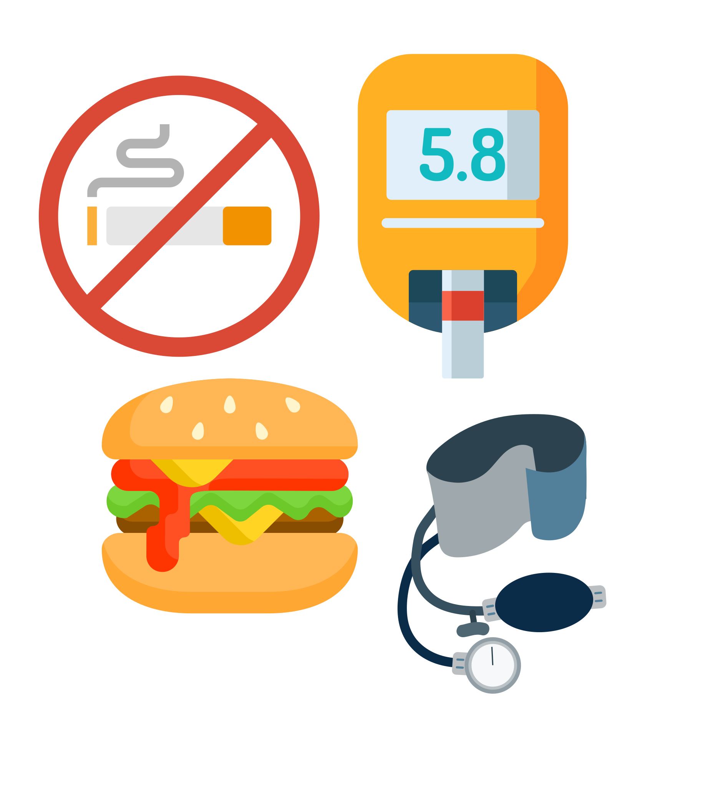
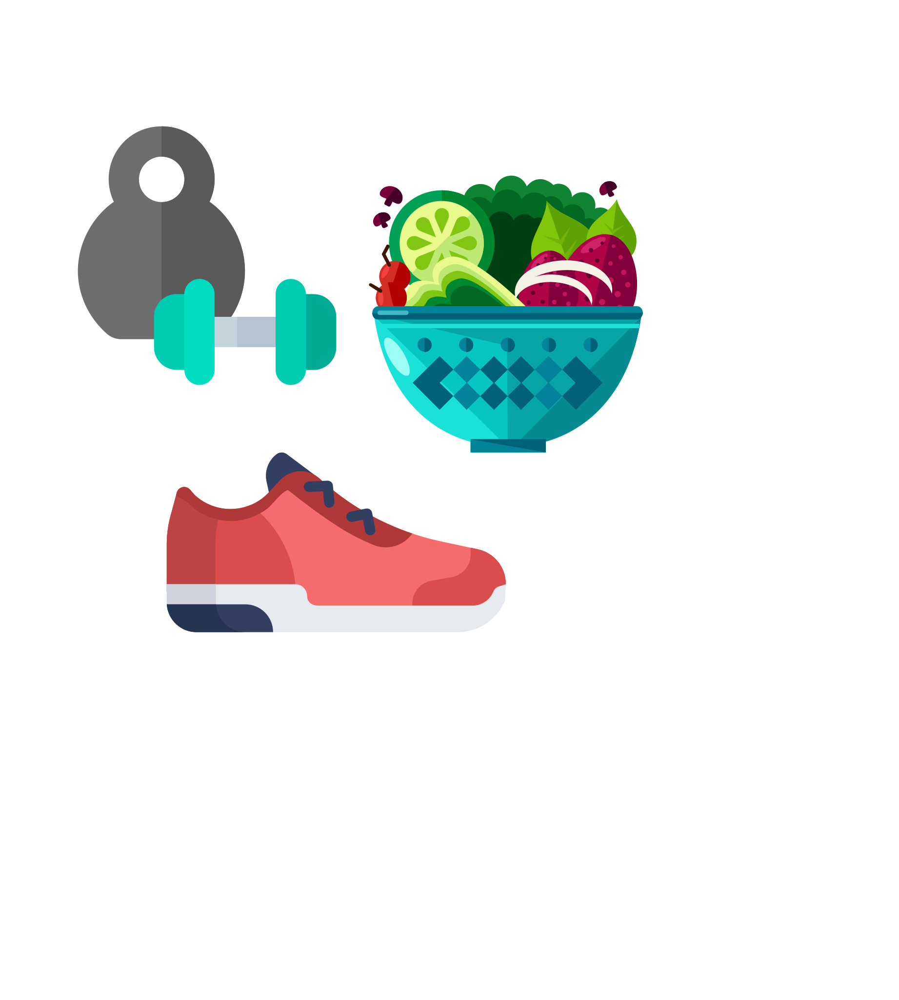

أمراض القلب والأوعية الدموية والسكتة الدماغية
أمراض القلب والأوعية الدموية تتمثل خصوصاً بالنوبات القلبية والسكتات الدماغية.
مرضى السكري على الأقل مرتين أكثر عرضة للإصابة بأمراض القلب وذلك في سن مبكرة.
عوامل الخطر
- داء السكري ومرحلة ماقبل السكري.
- العمر
- ارتفاع ضغط الدم
- التاريخ المرضي للعائلة
- التدخين
- ارتفاع الكوليسترول: ارتفاع مستويات كوليسترول البروتينات الدهنية منخفضة الكثافة LDL، وانخفاض مستويات كوليسترول البروتينات الدهنية مرتفعة الكثافة HDL، ارتفاع نسبة الدهون الثلاثية
- السمنة / زيادة الوزن
- قلة النشاط البدني
- الإجهاد المفرط

الوقاية
هناك خمس خطوات لمنع ظهور أو تكرار الإصابة بأمراض القلب والأوعية الدموية:
- خفض مستويات الكوليسترول.
- خفض مستويات ضغط الدم المرتفع
- زيادة نشاطك البدني على النحو المسموح به
- الإقلاع عن التدخين
